Ідеальні подарунки для всіх знаків Зодіаку – смарт-годинники Garmin
Багато з нас під час вибору подарунка ставлять собі питання: чи можна орієнтуватися на знак Зодіаку? Наша відповідь: можна, але не варто робити це головним критерієм. Зодіак може допомогти визначити загальний настрій подарунка, особливо якщо ви даруєте комусь символічний, емоційний або персональний подарунок. Це шанс проявити натхнення в процесі пошуку ідей, а також можливість показати людині, якій призначений презент, що ви ставитеся з особливою увагою і повагою до її особистості.
Зрештою, тема Зодіаку цікава і приємна багатьом – додає подарунку трохи таємничості, робить його привабливішим. А якщо ви зовсім не знаєте уподобань людини, орієнтування на знак Зодіаку допоможе визначитися зі стилем або типом подарунка.
У нашому огляді йтиметься про вибір смарт-годинників як подарунка для різних знаків Зодіаку. Ми беремо за основу моделі від американського бренду Garmin – одного з провідних сучасних виробників розумних годинників, які «заточені» на спорт, активний відпочинок і подорожі. «Астрологічний» підхід до вибору смарт-годинника Garmin, як нам здається, допоможе перетворити просто корисний гаджет на персоналізований подарунок, що відображає особистість людини за знаком Зодіаку. Отже, вибір подарунка стане більш усвідомленим і емоційно теплішим.
🔮🌠 Зміст: Смарт-годинники за знаком Зодіаку
спортивні та багатофункціональні годинники, які мотивують до нових рекордів.
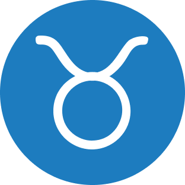
Телець (комфорт і якість):практичні модели з балансом функцій для спорту і повсякденності.
легкі, універсальні гаджети з широкою підтримкою активностей.
годинники для здоров'я та збалансованого способу життя.
преміальні гаджети, з ефектним дизайном і розширеними функціями.
годинники із зручним інтерфейсом і надійною якістю – нічого зайвого.
елегантні та функціональні моделі в стильному корпусі.
просунуті годинники з аналітикою та потужним трекінгом.
надійні, функціональні моделі з акцентом на результат.
гаджети з інтелектуальними функціями та комунікацією.
годинники з потужними функціями для здоров'я та спокійним дизайном.
Овен 🔥🐏 Енергійний, рішучий, динамічний 🏃♂️🥊🧗 Люди знака Овен люблять:
- ✅ активний спосіб життя і спорт;
- ✅ виклики (перегони, змагання) і досягнення;
- ✅ новинки і технології;
- ✅ стійкість гаджетів до складних умов експлуатації;
- ✅ швидкий доступ до інформації;
- ✅ стильний зовнішній вигляд з «характером».
Тому годинник для Овна має бути:
- з потужним функціоналом для мультиспорту/здоров'я і точним GPS;
- з мотиваційними функціями (плани, тренування);
- з можливістю бачити свої досягнення – цифри, графіки, прогрес;
- з інноваціями, які роблять життя простішим і цікавішим (наприклад, голосові функції, інтеграція зі смартфоном, розумні повідомлення);
- зі швидкою реакцією і високою автономністю (щоб гаджет не гальмував і не підводив);
- стильним аксесуаром (помітний корпус, виразний екран, сміливі варіанти ремінців), який зручний для щоденного носіння;
- у кольоровій палітрі, яка підкреслює енергійний характер Овна (всі відтінки червоного, чорний з акцентами, помаранчевий, яскраво-жовтий – це супер; темно-сірий, графітовий – нехай і строго, але по-бойовому).
Ставлення Овна до спорту
Овна по праву називають найспортивнішим знаком Зодіаку. Представники стихії Вогню дуже енергійні, люблять рух і інтенсивні фізичні навантаження. Спорт для них – спосіб відчути драйв. Овни люблять змагання. Для них важливо вигравати або бути першими, вони мотивуються лідерством.
Проте саме через свою високу внутрішню інтенсивність Овни особливо схильні до стресу. Щоб зберігати емоційний баланс і відчувати гармонію із собою, їм важливо регулярно скидати накопичене напруження.
Тому Овнів так приваблюють активні та екстремальні види спорту, що сприяють викиду адреналіну: біг, спринт, марафон, силові тренування, кросфіт, командні ігри, бойові мистецтва, бокс, єдиноборства, велоспорт, маунтинбайк, перегони, скелелазіння, паркур тощо. Саме через рух і фізичне навантаження Овни знаходять рівновагу тіла і розуму. Їм подобається перевіряти свої межі і досягати цілей з високою інтенсивністю.
Овни можуть захоплюватися новим видом спорту різко і активно, але іноді втрачають інтерес, якщо не бачать швидких результатів. Їм потрібна постійна мотивація і нові виклики.
Оскільки лідерство та індивідуальні досягнення для Овна є надзвичайно важливими, вони часто вибирають види спорту, де можна проявити особисту силу, швидкість, спритність або майстерність. Командні види спорту теж підходять, але і тут Овни прагнуть займати провідні позиції.
Розумні годинники Garmin для Овна
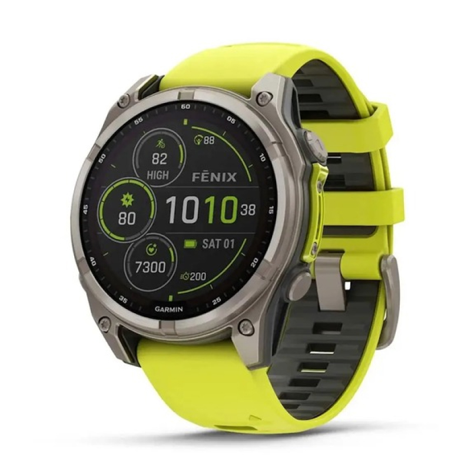
Годинник для чоловіка-Овна 🧒 ⚡ Для лідерів та шукачів пригод ⚡
Модель Fenix 8 Solar чудово підходить тим, хто любить екстремальні тренування, походи, тріатлон і широкий набір спортивних функцій. Гаджет не має вигляду «іграшки». Його розмір, елементи інтерфейсу і міцний корпус свідчать про готовність до будь-яких викликів. Це годинник для тих, хто не просто живе, а досягає поставлених цілей і перемагає.
Переваги:
- дуже точні GPS і навігація;
- альтиметр, компас, барометр;
- підтримка безлічі спортивних профілів, як-от біг, плавання, велосипед, тріатлон, лижі тощо;
- потужні тренувальні метрики;
- плани тренувань Garmin Coach – з фокусом на зростання результатів;
- довгий термін роботи батареї: залежно від моделі від 21 дня до 30 днів у звичайному режимі годинника;
- моніторинг здоров'я та відновлення – на високому рівні;
- Solar-підзарядка – подовжує час активного використання на сонці;
- військовий стандарт міцності, водозахист 10 АТМ;
- повсякденні розумні функції: повідомлення смартфона, керування музикою, безконтактні платежі, застосунки, нагадування;
- світлодіодний ліхтарик;
- стильний, «мужній» дизайн (лінійка Solar пропонує як моделі з яскраво-жовтим ремінцем, так і помірні нейтральні варіанти – чорний/графіт).
🏁️️ Fenix 8 Solar – ідеальний вибір для активного, незалежного Овна. Серйозний спортивний гаджет, який комфортно носити щодня. До нього можна підібрати ремінці під активний і повсякденний стиль.
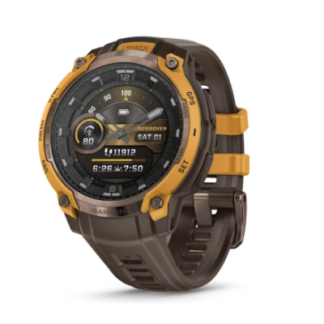
Годинник для чоловіка-Овна 🧒 ⚡ Для лідерів та шукачів пригод ⚡
Чоловічий смарт-годинник для будь-якої фізичної активності, походів чи просто для міста. Поєднує міцний корпус, AMOLED-екран, безліч спортивних функцій і сміливий, динамічний дизайн, що передає відчуття сили. Доступні два варіанти колірного оформлення: чорно-вугільний і бронзово-коричневий. Другий варіант візуально яскравіший і помітніший, що більшою мірою резонує з енергією Овна.
Переваги:
- яскравий кольоровий дисплей;
- аналогові стрілки поверх дисплея – нетривіальний дизайн;
- стиль outdoor зі спортивними елементами + фешн;
- сталь, сапфірове скло і великий корпус створюють відчуття міцності і наполегливості – як справжній «інструмент лідера»;
- водонепроникність до 10 ATM, стійкість до ударів, перепадів температур;
- мультисистемний GPS для точного трекінгу + навігаційні інструменти;
- підтримка різноманітних тренувань;
- екран показує дані тренувань, повідомлення, детальну статистику здоров'я – все це легко читати і використовувати в активному ритмі життя;
- вбудований LED‑ліхтарик;
- Bluetooth і ANT+ для синхронізації із застосунком Garmin Connect;
- оплата з годинника без телефона і без готівки;
- віджети з погодою, календарем, активністю за день, статистикою сну тощо (можна розмістити на циферблаті або в меню);
- відмінна автономність – до двох тижнів у режимі смарт-годинника.
🏁️️ Модель підійде тим, хто хоче придбати розумний гаджет з потужним функціоналом і сучасним дизайном. Годинник Instinct Crossover AMOLED не боїться екстремальних ситуацій і пригод, підходить для водних видів спорту. Це робить його чудовим вибором для людей, які ведуть активний спосіб життя.
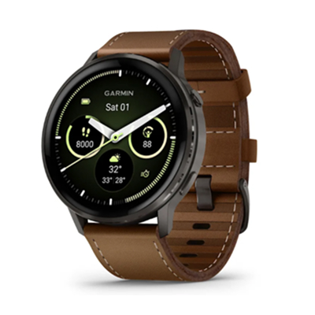
Годинник для чоловіка-Овна 🧒 Годинник для жінки-Овна 👧 ⚡ Баланс між опціями для спорту, моніторингу здоров'я та повсякденного життя ⚡
Годинник як для чоловіків, так і для жінок, які ведуть активний спосіб життя і для яких важливо щодня стежити за своїм здоров'ям. Металевий корпус і AMOLED-екран мають елегантний і сучасний вигляд – підходять до ділового та повсякденного одягу. Колірна палітра моделей, що входять до серії Venu 4, різноманітна: є універсальні версії з чорним, коричневим або сірим ремінцем, є також годинник більш виразного дизайну з яскравим лимонно-жовтим ремінцем. Можна змінювати ремінці (силікон, шкіра) під офісний або спортивний стиль.
Переваги:
- детальне відстеження здоров'я (пульс, SpO₂, стрес, сон тощо);
- плани тренувань на кожен день з рекомендаціями щодо відпочинку, відновлення, інтенсивності навантаження та адаптацією під рівень користувача;
- просунуті функції для моніторингу здоров'я;
- гарний і читабельний екран;
- сенсорне керування + кнопки – швидкий доступ до потрібної інформації;
- до 12 днів автономної роботи у звичайному режимі;
- вбудований ліхтарик (LED);
- повідомлення (SMS, дзвінки, месенджери);
- безконтактні платежі;
- керування музикою;
- голосовий помічник через під’єднання телефона або вбудовані команди;
- сумісність з iPhone/Android.
🏁️️ Стильний, потужний і водночас не громіздкий – розумний годинник Venu 4 (45 мм) добре підходить Овну, який цінує швидкість і комфорт, поєднує спорт і повсякденне життя.
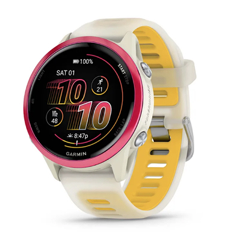
Годинник для чоловіка-Овна 🧒 Годинник для жінки-Овна 👧 ⚡ Максимум функцій для бігунів ⚡
Це багатофункціональний біговий смарт-годинник з яскравим AMOLED-екраном, потужними спортивними функціями та зручним доступом до даних. Відмінний вибір, якщо Овен захоплюється бігом, марафонами, тріатлоном чи хоче розвивати швидкість і витривалість, віддає перевагу тренуванням з прогресом.
Переваги:
- годинник легкий і зручний під час тренування;
- на вибір – моделі різного дизайну, серед них і яскраві веселі кольори, як любить Овен;
- точний GPS і детальна спортивна аналітика;
- понад 30 спортивних профілів;
- моніторинг здоров'я та енергії, розумні звіти та аналіз відновлення після навантаження;
- тренувальні плани з адаптацією під рівень підготовки;
- яскравий AMOLED-дисплей і швидке реагування;
- є сенсор і кнопки – зручно для динамічного використання;
- тривалий час автономної роботи: до 10-11 днів у режимі смарт-годинника;
- Garmin Pay – оплата з годинника;
- керування музикою і навіть дзвінки через годинник (є мікрофон/динамік);
- повідомлення з телефона.
🏁️️ Розумний годинник Forerunner 570 підкреслить дух суперництва, властивий Овну. Завдяки високій автономності він дасть змогу активно жити і тренуватися без частої підзарядки. Буде корисний не тільки на тренуванні, але і в повсякденному житті.
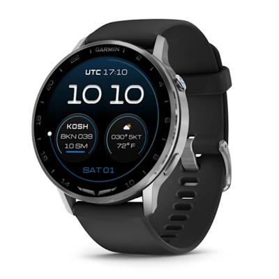
Годинник для чоловіка-Овна 🧒 Годинник для жінки-Овна 👧 ⚡ Для авіаторів або завзятих мандрівників ⚡
D2 Air X15 – універсальний профільний інструмент, який поєднує в собі спортивні, розумні та авіаційні функції, водночас залишаючись елегантним аксесуаром. У дизайні D2 Air X15 авіаційний стиль проявляється через технічні деталі корпусу, великий безель, функціональне оформлення циферблата і наявність LED-ліхтарика, які асоціюються з авіаційними приладами і професійним обладнанням пілота. Палітра спокійна і лаконічна – сріблястий або сланцево-графітовий корпус з чорним ремінцем.
Переваги:
- дані METAR/TAF про погоду;
- авіаційні функції (Direct-To-навігація, HSI-стрілка для орієнтування за курсом тощо);
- яскравий екран AMOLED з чіткою графікою;
- масивний корпус 45 мм – сміливий і помітний на зап'ясті;
- універсальний набір функцій для моніторингу здоров'я;
- просунуті фітнес-функції;
- голосові команди (наприклад, «Запустити функцію Fly» або «Показати METAR») – прискорюють доступ до потрібних функцій;
- повідомлення зі смартфона;
- голосові та текстові повідомлення через застосунок Garmin Messenger;
- до 10 днів автономної роботи в режимі смарт-годинника;
- вбудований ліхтарик з декількома режимами.
🏁️️ Чудовий вибір для енергійного, цілеспрямованого Овна-дослідника. Модель смарт-годинника D2 Air X15 особливо підійде мандрівникам, які люблять далекі поїздки і неординарні пригоди, часто літають на літаках чи працюють в авіації.
Підсумовуємо: яку модель краще вибрати Овну?
- 👉️ Якщо Овен – «чистий спортсмен», варто вибрати Fenix 8 Solar або Forerunner 570.
- 👉️ Якщо Овен – універсал, який стежить за здоров'ям, не помилитеся, вибравши модель Venu 4.
- 👉️ Якщо Овен любить брутальний стиль + спорт, оптимальним рішенням буде купити Instinct Crossover AMOLED.
- 👉️ Якщо Овен – мандрівник/авіатор, найліпшою моделлю стане D2 Air X15.
Телець 🌱🐂 Стійкий, практичний, спокійний 🏋️♂️🚵♂️🚶♀️ Люди знака Телець люблять:
- ✅ якісні та корисні речі;
- ✅ поступовість і системність;
- ✅ комфорт і задоволення;
- ✅ витривалість і наполегливість;
- ✅ зв'язок з природою;
- ✅ фокус на здоров'ї.
Тому годинник для Тельця має бути:
- довговічним та надійним – з якісних матеріалів корпусу/ремінця (сталь, кераміка, силікон);
- із просунутим моніторингом здоров'я, як-от відстеження пульсу, сну, рівня стресу, оцінка енергії Body Battery™ та відновлення, відстеження дихання, SpO2 тощо;
- практичним під час носіння – зручний на зап'ясті, не натирає;
- зі зручним інтерфейсом – простий старт занять і прості звіти, автоматичне відстеження активності;
- стильним, але без кричущого дизайну – спокійні, теплі відтінки (шоколадний, білий/кремовий, бежевий, олива/трав'яний) і хороший екран (чіткий, приємний для ока);
- функціональним, але без надмірностей – розумні повідомлення, музика, погода, календар, NFC-платежі (головне, щоб все працювало просто, стабільно та ефективно).
Ставлення Тельця до спорту
Люди, народжені під знаком Телець, ставляться до спорту як до способу підтримувати стабільність, здоров'я і гармонію тіла і розуму, а не заради адреналіну або змагання. Тельці віддають перевагу стабільним і регулярним тренуванням, а не різким сплескам активності. Їм подобаються види спорту, які приносять фізичне задоволення і відчуття гармонії з тілом. Тельці терплячі і здатні довго працювати над результатом, навіть якщо прогрес йде повільно. Заняття на свіжому повітрі особливо привабливі.
Популярні види активності для Тельців: силові тренування, йога, пілатес, плавання, піші прогулянки і трекінг, походи на природу, велосипедні прогулянки і велоспорт, командні ігри в помірному темпі (футбол, волейбол), скелелазіння та помірні екстремальні види спорту.
Розумні годинники Garmin для Тельця
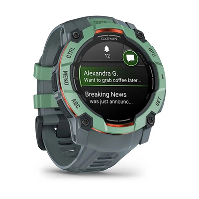
Годинник для чоловіка-Тельця 🧒 Годинник для жінки-Тельця 👧 ⚡ Чудовий вибір для Тельця, який цінує речі, що не ламаються і служать довго ⚡
Годинник виготовлено з армованого скловолокном полімеру та алюмінію, має рівень захисту від зовнішніх впливів відповідно до військового стандарту MIL-STD-810. Це міцний гаджет для поціновувачів прогулянок, трекінга та повсякденної активності. Модель Instinct 3 AMOLED представлена в декількох варіантах дизайну, до того ж періодично серія поповнюється новими кольорами.
Переваги:
- яскравий екран + outdoor-корпус;
- точна навігація з мультисупутниковим GPS;
- відстеження здоров'я, сну, відновлення та енергії протягом дня;
- багато спортивних профілів – дані чіткі та практичні;
- строгий, впевнений, практичний стиль і зручність на руці – без зайвого «панку»;
- корпус витримує вплив води (рівень водозахисту 10 АТМ) і екстремальні умови;
- вбудований ліхтарик;
- годинник показує дзвінки, повідомлення, листи та сповіщення прямо на зап'ясті – зручно і не вимагає частих перевірок телефона;
- можна приймати швидкі відповіді (якщо Android) і відстежувати календарні події;
- оплата з годинника – Garmin Pay;
- тривалий час роботи батареї: до 24 днів у звичайному режимі;
- різноманітність моделей – Тельцям, які люблять простоту, підійде чорно-вугільна або чорно-синя палітра, а для тих, хто більше цінує гармонію та естетичне задоволення, варіант Neo Tropic/Twilight може здатися «свіжішим і врівноваженішим», ніж просто чорний.
🏁️️️ Телець любить надійні пристрої, які витримують рутину і пригоди. Модель Instinct 3 AMOLED відмінно підходить як для спорту, так і для відпочинку.
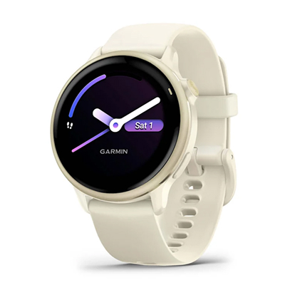
Годинник для чоловіка-Тельця 🧒 Годинник для жінки-Тельця 👧 ⚡ Найкращий вибір для повсякденного використання ⚡
Модель Garmin Vivoactive 6 особливо добре відповідає характеру Тельців, пропонуючи практичність, усвідомлений підхід до тренувань і зручність. Підходить для регулярних занять спортом, відмінно працює в повсякденній активності, допомагає відстежувати самопочуття. Круглий корпус, чіткі лінії та мінімалізм роблять годинник доречним і в офісі, і на прогулянці, і в спортзалі.
Переваги:
- яскравий AMOLED-екран – комфортний для очей;
- детальний моніторинг здоров'я;
- підтримка медитації та дихальних вправ, відстеження стресу протягом дня і підказки про необхідність дихальної паузи;
- GPS-трекінг, компас, висотомір;
- підтримка понад 20 видів активності;
- анімовані тренування прямо на дисплеї;
- стильний, але не агресивний дизайн (на вибір чотири кольори: чорний, яшма, золотистий/слонова кістка, рожевий металік);
- корпус середнього розміру (42 мм) з легким ремінцем – комфортний для щоденного носіння;
- до 8 днів автономної роботи в смарт-режимі;
- сумісність з iOS/Android, повідомлення зі смартфона;
- Garmin Pay, керування музикою.
🏁️️️️ Телець любить баланс комфорту і користі. Vivoactive 6 дає і те, і інше дуже гідно. У межах серії представлені різні колірні варіанти – спокійні нейтральні і не надто яскраві, що дає змогу підібрати аксесуар на будь-який смак. Розмір корпусу (~ 42 мм) підходить для вузького і середнього зап'ястя, тому ця модель приваблює як чоловіків, так і жінок..
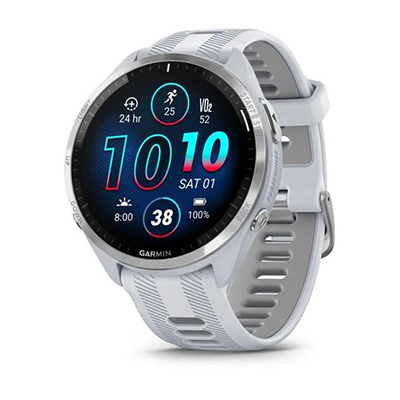
Годинник для чоловіка-Тельця 🧒 Годинник для жінки-Тельця 👧 ⚡ Для тих, хто любить планомірний прогрес ⚡
Збалансований варіант із GPS, точним пульсометром і багатьма спортивними профілями. Годинник підходить для тренувань, але водночас не надто нав'язливий у повсякденному носінні. Дизайн – яскраво виражений спортивний унісекс. До серії Forerunner 965 входять три моделі (чорного, біло-сірого та жовтого кольорів), які легко адаптувати під свій стиль – і чоловікам, і жінкам.
Переваги:
- великий яскравий AMOLED-екран (1,4 дюйми) з підтримкою постійного режиму Always-On;
- повнокольорові мапи;
- моніторинг здоров'я та відновлення;
- просунутий GPS та аналітика тренувань;
- адаптивні плани тренувань через функцію Garmin Coach;
- годинник ідеальний для бігу, ходьби, велотренувань;
- міцний і довговічний;
- можливість слухати, керувати та зберігати аудіо прямо на годиннику;
- календар і нагадування;
- оплата Garmin Pay;
- повідомлення зі смартфона;
- до 23 днів автономної роботи у звичайному режимі.
🏁️️️️ Телець цінує чіткий прогрес. Годинник Forerunner 965 допомагає рухатися поетапно до цілей, без зайвого шуму. До того ж він довго тримає заряд і не вимагає частих оновлень.
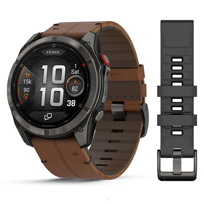
Годинник для чоловіка-Тельця 🧒 ⚡ Надійний інструмент для пригод ⚡
Топ-рівень з AMOLED-дисплеєм і величезною кількістю функцій для спорту, походів і щоденного здоров'я. Преміум-варіант для тих, хто любить активний спосіб життя. Серія Fenix 8 Pro AMOLED представлена двома розмірами: 47 мм (підходить для середньої руки або тим, хто хоче великий екран, але не надто громіздкий годинник) і 51 мм (має шикарний вигляд така модель на широкому зап'ясті). Стримана палітра (сірий/антрацит/титан у гармонії з чорним або коричневим ремінцем) сподобається тим, хто любить спокійний естетичний стиль, який не набридне роками.
Переваги:
- супернадійний і довговічний годинник: сталь/титан, захищене від подряпин сапфірове скло, водозахист 10 АТМ;
- чудова автономність: до 15-27 днів (в залежності від розміру/звичайний режим);
- максимально глибока аналітика здоров'я та активності;
- можливості навігації та outdoor-функції;
- вбудований ліхтарик;
- повідомлення зі смартфона про вхідні дзвінки, SMS, месенджери, повідомлення застосунків;
- вбудовані мікрофон і динамік – можна прийняти/здійснити дзвінок у разі під’єднання до смартфона;
- безконтактна оплата покупок;
- музика без телефона;
- нагадування про зустрічі та події з календаря смартфона;
- будильники та таймери;
- прогноз погоди;
- зручний і зрозумілий інтерфейс – не потрібно постійно «копатися» в налаштуваннях.
🏁️️️️ Ця серія ідеальна для Тельців-любителів природи, довгих прогулянок на вихідних і походів. Годинник Fenix 8 Pro AMOLED не «кричущий», але статусний. Він однаково доречний в місті, спортзалі та на природі.
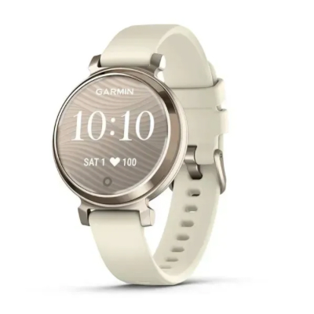
Годинник для чоловіка-Тельця 🧒 ⚡ Елегантний щоденний трекер ⚡
Вишуканий смарт-годинник Garmin Lily 2 цілком підходить жінці-Тельцю, особливо якщо для неї важливі комфорт, стиль, здоров'я і повсякденна активність, а не високі спортивні навантаження. Модель доступна в різних кольорах – наприклад, бузковий/ліловий або кремове золото зі світло-бежевим ремінцем. Ремінець легко знімається, і його можна замінити на інший, що дає більше можливостей вибрати стиль під свій образ.
Переваги:
- компактний, тонкий і легкий годинник;
- жіночний стиль – годинник має вигляд модного аксесуара;
- основні функції здоров'я – для турботи про тіло без «екстремальних» тренувань;
- є ~ 18 профілів активності (наприклад, прогулянки, біг, танці, вело), так що можна відстежувати різні види помірної активності, але без просунутих спортивних метрик;
- повідомлення про дзвінки та СМС;
- календар і нагадування;
- будильники;
- до 5 днів автономної роботи у звичайному режимі – не потрібна постійна зарядка.
🏁️️️️️ Чудовий вибір, якщо жінка-Телець віддає перевагу невеликому розміру, делікатному дизайну та гармонійності. Годинник Lily 2 добре поєднується з повсякденним та діловим одягом.
Підсумовуємо: яку модель краще вибрати Тельцю?
- 👉 Якщо для Тельця головне – здоров'я і повсякденний комфорт, Vivoactive 6 підійде якнайкраще.
- 👉 Якщо мета – спорт і прогрес, Тельцю розумніше буде звернути увагу на серію Forerunner.
- 👉 Якщо важливі міцність і багатозадачність, Fenix 8 Pro AMOLED – вдалий вибір.
- 👉 Якщо потрібен баланс між спортом і повсякденним життям, варто уважніше придивитися до версій Instinct 3 AMOLED.
- 👉 Якщо важливий витончений стиль, вибирайте гарний і маленький годинник Lily 2.
Близнюки 👯🌬️ Активні, допитливі, комунікабельні 👟🎾⛹️ Люди знака Близнюки люблять:
- ✅ спілкуватися і бути на зв'язку;
- ✅ різноманітність, динамічність і швидкість;
- ✅ технології, інновації та яскраві інтерфейси (активно використовують смартфони та застосунки);
- ✅ соціальну активність + інтелектуальний виклик;
- ✅ багатозадачність і гнучкість;
- ✅ легкість і свободу.
Тому годинник для Близнюків має бути:
- з підтримкою безлічі спортивних профілів – біг, велоспорт, прогулянки, йога, силові вправи, тренування вдома;
- зі зручним меню, швидким доступом до даних і можливістю легко перемикатися між режимами;
- сумісний з різними застосунками та налаштуваннями;
- з розумними функціями для комунікації – повідомлення (дзвінки, СМС, месенджери), швидкий доступ до відповідей (шаблони/голосовий ввід), відмінна синхронізація зі смартфоном, віджети з прогнозом погоди, календар тощо;
- з аналітикою тренувань і здоров'я (Близнюкам подобається бачити «що і як»);
- з хорошою автономністю;
- виразного, але ненав'язливого дизайну (Близнюки часто тяжіють до свіжих, легких і універсальних кольорів, які відображають їхні розум і комунікабельність).
Ставлення Близнюків до спорту
Близнюки зазвичай ставляться до спорту не тільки як до фізичного навантаження, а як до способу спілкування та інтелектуальної стимуляції. Монотонні тренування швидко набридають, тому Близнюки люблять змінювати види спорту і пробувати щось нове. Їм подобаються швидкі вправи та ігри, де потрібна реакція, спритність і кмітливість. Командні види спорту, групові тренування або змагальні ігри особливо приваблюють Близнюків. Також їм цікаві види спорту, де потрібна стратегія, координація або планування. Однак Близнюки рідко терплять суворість і нав'язані правила – для них важливі вибір і можливість адаптувати тренування під себе.
Види спорту, які частіше вибирають Близнюки: біг, спринт, інтервальні тренування, велоспорт, велотренажер, теніс, бадмінтон, пінг-понг, кросфіт, йога, пілатес, акробатика, серфінг, скейтборд, паркур та різні екстремальні види активності.
Розумні годинники Garmin для Близнюків
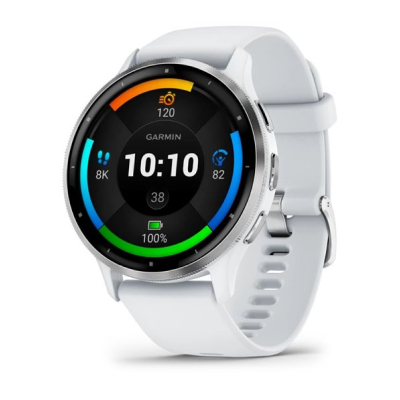
Годинник для чоловіка-Близнюків 🧒 Годинник для жінки-Близнюків 👧 ⚡ Просунутий екран і фітнес-функції ⚡
Модель Venu 3 пропонує вбудований GPS і безліч спортивних профілів (біг, велоспорт, йога, плавання тощо), а також корисні спортивні дані для щоденних тренувань. Це важливо для Близнюків, які люблять різноманітність і зміну видів активності.
Переваги:
- AMOLED-дисплей – яскравий, чіткий, зручний для читання;
- преміальні метрики здоров'я – розумний годинник відстежує ЧСС, рівень кисню в крові (SpO2), стрес, дихання, аналізує варіабельність серцевого ритму;
- детальний аналіз якості сну, зокрема виявлення і моніторинг денного сну (дрімоти);
- понад 30 спортивних застосунків, анімовані тренування;
- унікальні функції – інструмент «Батарея тіла» (Body Battery), відстеження активності та тренувань для людей в інвалідних візках, функція ЕКГ (доступність залежить від регіону);
- смарт-функції для повсякденного життя та зв'язку (повідомлення, дзвінки та СМС із зап'ястя, вбудований мікрофон і динамік, керування музикою та гаманець Garmin Pay);
- до 14 днів автономної роботи у звичайному режимі;
- стильний універсальний дизайн – для спорту та на кожен день (модель Venu 3/45 мм пропонує два базові та універсальні кольори – чорний і сріблясто-білий).
🏁️️️️️️ Годинник Venu 3 (45 мм) підходить тим Близнюкам, хто хоче комфортно поєднувати турботу про своє здоров'я, технології та стиль. Безліч циферблатів і змінний ремінець – також ключові нюанси для багатьох Близнюків, для яких важливо, щоб пристрій не набридав.
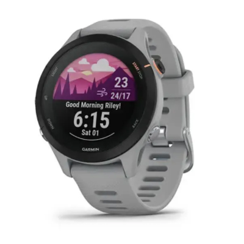
Годинник для чоловіка-Близнюків 🧒 Годинник для жінки-Близнюків 👧 ⚡ Відстеження здоров'я + спортивні дані + зв'язок ⚡
Моделі Garmin Forerunner 255/255S та їхні музичні версії пропонують розширені тренувальні метрики – статус тренування, аналіз навантаження, відстеження відновлення, гід щодо темпу і таке інше, що допомагає планувати різноманітні заняття. Це саме те, що оцінять Близнюки – варіативність даних і можливість експериментувати з різними видами спорту.
Переваги:
- Легкий і не громіздкий годинник – зручно носити щодня
- Автономність до ~14 днів у режимі смарт-годинника і багато годин у режимі GPS
- Безліч спортивних профілів – для тих, хто любить змінювати види активності і не зациклюватися на одному виді спорту
- Вбудований GPS з високою точністю
- Відмінний для повсякденної активності моніторинг здоров'я
- Отримання розумних повідомлень зі смартфона, а при сполученні з Android — можливість відповідати на SMS і повідомлення прямо з годинника
- Версія Music може зберігати до ~500 пісень у пам’яті годинника
- Безконтактні платежі із зап'ястя — оплата покупок без телефона або гаманця (підтримується більшістю банків)
🏁️️️️️️ Смарт-годинник Forerunner версії 255 або 255S добре вписується в характер Близнюків, яким важливі і рух, і інформація, і взаємодія з навколишнім світом. Стиль його оформлення – чітко спортивний і практичний унісекс. Він не надто агресивний або модний, але й не надто строгий – досить збалансований, щоб носити годинник і на тренуваннях, і в повсякденному житті. На вибір пропонуються різні кольори: чорний, різні відтінки сірого, синій, білий, рожевий.
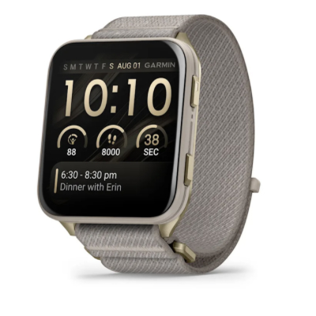
Годинник для чоловіка-Близнюків 🧒 Годинник для жінки-Близнюків 👧 ⚡ Миттєвий доступ до інформації та комунікація ⚡
Відразу впадає в око великий (2 дюйми) AMOLED-екран квадратної форми з яскравим і чітким зображенням, на якому зручно читати сповіщення і дані про здоров'я. Завдяки вбудованим мікрофону і динаміку можна приймати/здійснювати дзвінки і давати голосові команди прямо з годинника.
Переваги:
- Підтримка понад 100 попередньо встановлених спортивних профілів + функції аналізу тренувань і щоденні звіти
- GPS, GLONASS, Galileo + карти з маршрутизацією і навігацією
- Розширений моніторинг здоров'я
- Музика на борту + керування плеєром – швидко і зручно
- Платіжна опція Garmin Pay і розумні повідомлення
- Голосові команди та взаємодія з голосовими помічниками смартфона (Siri, Google Assistant) – таймери, запуск тренувань і надсилання текстів голосом
- Автономність батареї – до 8 днів у звичайному режимі (без Always-On)
- Міцний титановий корпус із сапфіровим склом – підходить для спорту й повсякденного використання
- Вбудований світлодіодний ліхтарик у корпусі
- Тонкий дизайн і легка вага – комфорт протягом усього дня (доступні кольори: чорний, мохово-зелений, золотистий із сірим ремінцем)
- Голосові команди для швидкого доступу до функцій (наприклад, «Запустити функцію Fly» або «Показати METAR»)
🏁️️️️️️️ Близнюки люблять досліджувати нові місця. Відмінно представлені в годиннику Venu X1 функції для навігації та активного способу життя допомагають орієнтуватися і відчувати себе впевнено під час пригод. Також Близнюкам сподобаються інформаційна насиченість (багато даних і швидкий доступ до них), соціальна зручність і баланс між опціями для моніторингу активності та благополуччя.
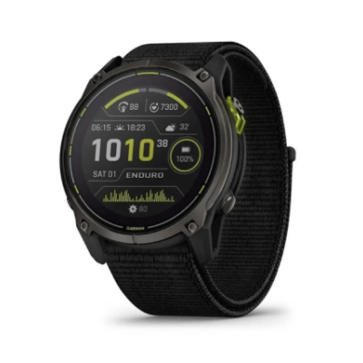
Годинник для чоловіка-Близнюків 🧒 ⚡ Для туристів та ультраспортсменів ⚡
Мінімум турбот про зарядку і максимум свободи для тривалих активностей. Смарт-годинник відмінно підходить тим Близнюкам, хто любить тривалі тренування і прогулянки, походи, гірський туризм, багатоденні маршрути. Стиль оформлення – спорт/аутдор в універсальній чорно-графітовій палітрі.
Переваги:
- Максимальна автономність: до ~36 днів у режимі смарт-годинника і до кількох сотень годин GPS із сонячною підзарядкою
- Розширений моніторинг здоров'я: пульс, сон, рівень енергії Body Battery та інші показники
- Велика кількість спортивних профілів: біг, велосипед, хайкінг, ультрамарафони та інше
- Просунуті тренувальні метрики: VO2 max, готовність до тренування, статус активності та сну
- Навігація, карти та розширений GPS (multi-band)
- Надміцний корпус із титану та пластику з вбудованим LED-ліхтарем
- Зберігання музики прямо в годиннику (Spotify / Deezer)
- Отримання повідомлень зі смартфона
- Garmin Connect IQ — кастомні циферблати та додатки
- Безконтактні платежі: можливість прив’язати кілька банківських карток і оплачувати покупки прямо із зап’ястя
🏁️️️️️️️️ Enduro 3 – це модель для активних і екстремальних навантажень. Близнюків у ній привабить різноманітність функцій і особливо можливості для пригод.
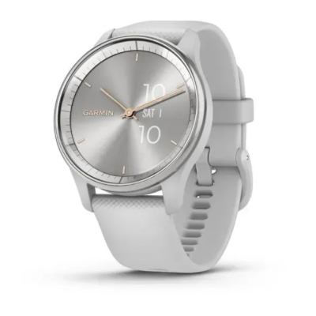
Годинник для чоловіка-Близнюків 🧒 ⚡ Стиль + технології + легкий фітнес-контроль ⚡
Гібридний годинник зі стильним – класичним аналоговим – дизайном. Маючи вбудовані смарт-функції, він відстежує основні тренування і здоров'я, але більше орієнтований на повсякденну активність. Дизайн Vivomove Trend можна назвати універсальним – цей годинник елегантний, але не пафосний, більше схожий на модний аксесуар, ніж на «техно-гаджет». Доступні кілька моделей у м'яких кольорах, які підкреслюють стиль, а не спортивність: грифельно-чорний, сріблясто-сірий, кремово-золотистий + французький сірий і персиково-золотистий + айворі.
Переваги:
- Корпус ~40 мм — не надто великий, підходить для більшості зап’ясть
- Елегантний дизайн із прихованим цифровим дисплеєм: при дотику або піднятті зап’ястя стрілки відходять і з’являється сенсорний екран
- Відстеження здоров’я: пульс, SpO₂, рівень стресу та сон
- Фітнес-профілі: йога, силові тренування, кардіо, біг та інші
- Хороша автономність — до ~5 днів у смарт-режимі
- Підтримка Qi-бездротової зарядки (достатньо розмістити годинник по центру зарядної панелі)
- Перегляд повідомлень про дзвінки та SMS, а при підключенні до Android — можливість відповідати зі смарт-годинника
- Безконтактні платежі Garmin Pay, календар та інші корисні функції
🏁️️️️️️️️️ Годинник Vivomove Trend поєднує «краще з двох світів» – елегантний дизайн і розумні можливості. Це може прямо «в яблучко» підійти знаку Близнюки, які люблять одночасно гарні та функціональні речі.
Підсумовуємо: яку модель краще вибрати Близнюкам?
- 👉 Якщо в пріоритеті смарт-годинник для легких активностей, більш універсальні моделі Garmin (наприклад, серії Venu 3 або Forerunner 255 / 255S) будуть комфортнішими й звичнішими у щоденному використанні
- 👉 Якщо є запит на просунутий годинник із підтримкою багатьох активностей і потужним набором смарт-функцій, варто звернути увагу на модель Venu X1
- 👉 Якщо важливі висока автономність, розширені тренувальні метрики та GPS для подорожей і походів, оптимальним вибором стане Enduro 3
- 👉 Якщо потрібен стильний годинник під сукню або офісний костюм — менш спортивний і доступніший за ціною, Vivomove Trend буде вдалим варіантом
Рак 💦🦀 Чутливість, увага до комфорту, інтуїція 🧘♀️🏊💃 Люди знака Рак люблять:
- ✅ Дбати про здоров'я
- ✅ Любити природу, особливо водну стихію
- ✅ Цінувати відпочинок на свіжому повітрі та подорожі
- ✅ Комфортну атмосферу
- ✅ Регулярність без перевантаження
- ✅ Плавні рухи
Тому годинник для Рака має бути:
- З акцентом на моніторинг здоров'я, стресу, сну й відновлення (Раки чутливі до стану тіла і душі, їм важливо бачити турботу про себе в цифрах і графіках — це приносить спокій)
- Комфортним і ненав’язливим у носінні — м’які ремінці та приємні на дотик матеріали
- З м’яким і елегантним дизайном: спокійні, глибокі тони, що асоціюються з водою й домашнім затишком (синій, перламутровий, сріблястий, сіро-блакитний, ніжно-рожевий, пастельні відтінки)
- Функціональним, але не перевантаженим — прості тренування без надмірних спортивних «наворотів», ідеальний баланс для натури Рака
- З інтуїтивно зрозумілим інтерфейсом, де все під рукою (важливо, щоб пристрій не дратував, а ставав помічником і другом)
- З якісною підтримкою повідомлень і стабільною синхронізацією зі смартфоном (для Раків важливі сімейні та емоційні зв’язки)
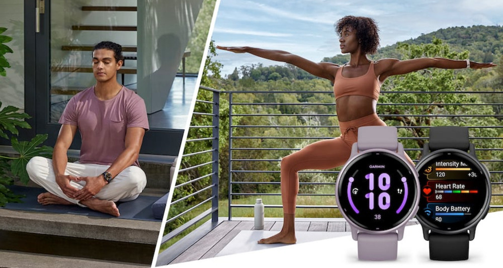
Ставлення Рака до спорту
Людям під знаком Рак найкраще підходять види спорту, які поєднують м'яке фізичне навантаження, емоційний комфорт і відчуття безпеки. Раки чутливі, інтуїтивні і не люблять жорсткого тиску – їм важливо займатися у своєму ритмі.
Водні види спорту, як-от плавання, аквааеробіка, SUP-бординг, каякінг, особливо сприятливі для Рака. Вода – рідна стихія цього знака, вона допомагає знімати стрес і відновлюватися емоційно.
Також ідеальними видами спорту для Рака є йога, пілатес, стретчинг, дихальні практики, які чудово підходять для балансу тіла та емоцій, знижують тривожність. Підтримують форму без перевантажень ходьба, скандинавська ходьба, легкий біг (без гонитви за результатом), велопрогулянки. Танці – східні, латина в м'якому форматі, контемпорарі – допомагають виразити емоції і зняти внутрішню напругу. Хайкінг, прогулянки в парку або лісі подарують приплив енергії та спокою.
Що не підходить Ракам: жорстко конкурентні види спорту, екстремальні навантаження, тренування «через біль і тиск». Раки швидко втрачають мотивацію, якщо спорт стає стресом.
Розумні годинники Garmin для Рака
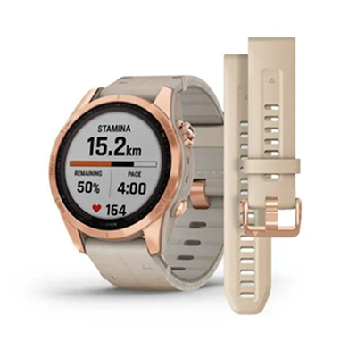
Годинник для чоловіка-Рака 🧒 Годинник для жінки-Рака 👧 ⚡ Універсальна модель для спорту та здоров'я ⚡
Garmin Fenix 7S – збалансований варіант із серії Fenix у компактнішому розмірі (42 мм). Підходить для щоденного носіння та активного відпочинку. Цей годинник представлений у декількох колірних варіантах, зокрема й у таких ніжних, затишних для Рака відтінках, як колір рожевого золота, сріблястий і кремово-золотистий (+ світлі ремінці додають м'якості).
Переваги:
- Відстеження великої кількості показників самопочуття, що допомагають піклуватися про тіло та емоційний стан
- Для жінок: відстеження менструального циклу й вагітності, пов’язаних симптомів, а також поради щодо тренувань і харчування в різні фази
- Водонепроникність до 10 ATM — годинник можна не знімати під час плавання в басейні
- Широкий набір спортивних застосунків — від йоги й пілатесу до бігу, велопрогулянок і походів
- Просунута GPS-навігація з підтримкою кількох супутникових систем, маршрутами та треками прямо на зап’ясті — зручно для відпочинку на природі та біля води
- Розумні повідомлення, керування музикою та безконтактні платежі Garmin Pay
- Автономність до 11 днів у смарт-режимі — без потреби частого заряджання
- Підзарядка від сонця (у Solar-версіях) для подовження автономності годинника
🏁️️️️️️️️️ Детальна аналітика сну, стресу та здоров'я роблять модель Fenix 7S привабливою для тих, хто любить глибше вивчати свій стан. Стиль і практичність (особливо в м'яких пастельних або золотих варіантах) неодмінно сподобаються жінці-Раку.
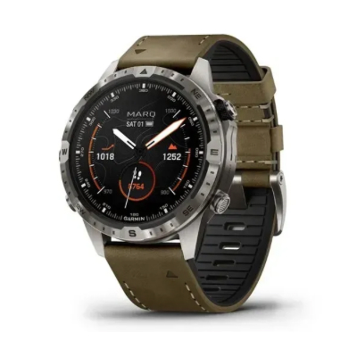
Годинник для чоловіка-Рака 🧒 ⚡ Розширені outdoor-функції + солідний дизайн ⚡
Це преміальний смарт-годинник Garmin серії MARQ, орієнтований на активних людей, мандрівників і поціновувачів пригод. Він поєднує багатий набір функцій для спорту, навігації та здоров'я, а також стильний дизайн з титановим корпусом, сапфіровим склом і AMOLED-екраном.
Переваги:
- Просунуті функції моніторингу здоров'я
- Вбудовані карти та функції орієнтування на місцевості
- Опції для активного відпочинку й подорожей: повернення до початкової точки маршруту (TracBack), планування підйомів (ClimbPro), профілі висот
- Тривала автономність — до 16 днів у смарт-режимі
- Відображення вхідних дзвінків, повідомлень, електронної пошти та сповіщень із застосунків прямо на екрані годинника
- Можливість швидко відповісти або відхилити дзвінок за допомогою готових відповідей (для Android)
- Календар і прогноз погоди
- Безконтактні платежі з годинника
- Віджет для відстеження вартості акцій
- Зберігання до ~2000 пісень у пам’яті годинника та прослуховування музики без телефона
- Контроль камер VIRB® — дистанційне керування екшн-камерою Garmin
- Два ремінці в комплекті: коричневий шкіряно-каучуковий і додатковий чорний силіконовий — для пригод і щоденного спортивного стилю
🏁️️️️️️️️️️ Раки цінують красу, якість і емоційне значення подарунка, а MARQ Adventurer (Gen 2) здатний «мати гідний вигляд» в різних ситуаціях. Але важливо мати на увазі, що йдеться про модель топ-рівня – отже, ціна у неї висока. Це може бути дорогий подарунок, який підійде не всім за бюджетом.
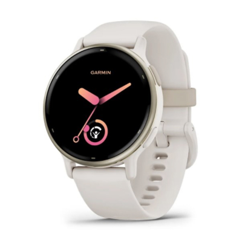
Годинник для чоловіка-Рака 🧒 Годинник для жінки-Рака 👧 ⚡ Збалансований спорт, турбота про здоров'я та щоденна активність
Garmin Vivoactive 5 – чудовий годинник для щоденного контролю здоров'я та легких занять спортом, який має стильний, але не надто спортивний вигляд. Вбудований GPS дає змогу точно фіксувати маршрути прогулянок і легких тренувань без телефона.
Переваги:
- Допомагає стежити за здоров'ям делікатно й всебічно
- Особливо сподобаються Ракам функції Body Battery™ (показує рівень енергії протягом дня), стрес-трекер і дихальні вправи
- Підтримує помірні види спорту й активності, які не створюють додаткового стресу
- Комфортний AMOLED-дисплей — сучасний, м’який і приємний для очей, без зайвої «кричущості»
- Стильний дизайн: плавні лінії, тонкий профіль, легка вага й загальна візуальна гармонія
- Різноманітність моделей: чорний і темно-синій унісекс, світло-золотистий із відтінком слонової кістки, а також ніжний варіант для дівчат у кольорі орхідеї
- Змінні ремінці шириною 20 мм — легко підібрати варіант під стиль, одяг або настрій (пастельні, шкіряні, текстильні)
- До ~11 днів автономної роботи в режимі смарт-годинника — без частих підзарядок
- Повідомлення зі смартфона, календар, погода та нагадування
- Безконтактні платежі Garmin Pay і керування музикою
🏁️️️️️️️️️️️ Garmin Vivoactive 5 – це баланс між турботою про тіло, комфортом і корисними функціями. Саме те, що найчастіше цінують Раки.
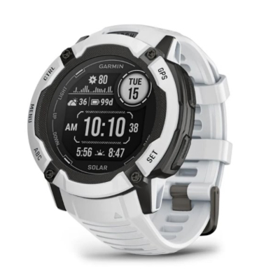
Годинник для чоловіка-Рака 🧒 ⚡ Надійність і тривала автономність ⚡
Instinct 2X Solar – міцний годинник з тривалим часом роботи акумулятора, оптимальний для велосипедних маршрутів, походів і помірних тренувань. Оформлений у спортивному аутдор-стилі, масивний (51 мм), підходить для великого зап'ястя. У межах серії представлені чорний, білий, полум'яно-червоний і темно-зелений (мох) відтінки.
Переваги:
- Витривалий корпус — годинник не боїться ударів і примх погоди
- Водозахист 10 ATM — оптимально для прогулянок на човні, каякінгу або SUP
- Тривала автономність: батарея працює до кількох тижнів, а сонячна підзарядка подовжує час роботи без розетки
- Детальна аналітика фізичної активності та показників здоров'я
- GPS-навігація та маршрутні функції
- Вбудований ліхтар
- Прогноз погоди прямо на зап’ясті
- Синхронізація зі смартфоном: повідомлення про дзвінки, SMS, пошту та події календаря
- Безконтактні платежі з годинника — без телефона чи банківської картки
- LiveTrack і Group LiveTrack — можливість ділитися маршрутом у реальному часі з друзями або родиною
- Функції безпеки: у разі інциденту годинник може надіслати ваше місцезнаходження вибраним контактам (за умови підключення до смартфона)
🏁️️️️️️️️️️️️ Годинник Instinct 2X Solar особливо добре підійде Ракам, які віддають перевагу активному відпочинку на природі, тривалим прогулянкам і турботі про здоров'я.
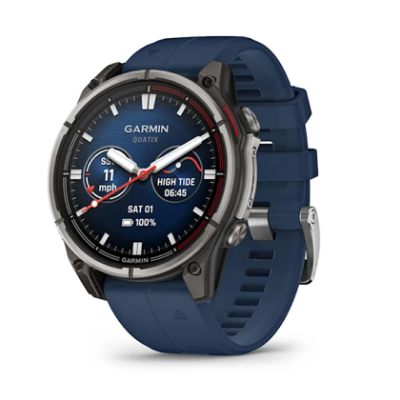
Годинник для чоловіка-Рака 🧒 Годинник для жінки-Рака 👧 ⚡ Для життя на воді та відпочинку біля води ⚡
Преміальний годинник Quatix 8 підтримує функції та застосунки для яхтингу, морських прогулянок, риболовлі, моніторингу припливів/відпливів, контролю якоря та регатних таймерів. Це робить його ідеальним супутником для відпочинку біля моря, озера або на човні.
Переваги:
- Підходить для плавання, снорклінгу та рекреаційного дайвінгу — занурення до 40 м
- Повноцінний моніторинг здоров'я
- Спортивні профілі для плавання, ходьби, йоги та інших активностей
- Тривала робота без підзарядки — до 16–29 днів у режимі смарт-годинника (залежить від розміру корпусу та налаштувань)
- Вбудовані мікрофон і динамік для дзвінків і взаємодії
- Повідомлення зі смартфона та режими безпеки
- Календар, прогноз погоди й ранковий звіт — уся базова інформація для щоденного планування
- Безконтактні платежі з годинника
- Віджет для моніторингу улюблених акцій прямо на зап’ясті
- Завантаження треків і плейлистів зі Spotify, Deezer або Amazon Music та прослуховування через Bluetooth-навушники
🏁️️️️️️️️️️️️ Quatix 8 може дуже добре підійти людині під знаком Рак, для якої особливо важливі вода, пригоди і почуття захищеності. Синій ремінець і спокійний преміальний дизайн гармонують з характером Рака.
Підсумовуємо: яку модель краще вибрати Раку?
- 👉 Якщо важливіше щоденне здоров'я і стиль → Vivoactive 5
- 👉 Якщо потрібен надійний і довговічний гаджет → Instinct 2X Solar
- 👉 Якщо хочеться універсальний інструмент для активності та відпочинку → Fenix 7S
- 👉 Якщо потрібен максимум функцій для відпочинку біля води, плавання, яхтингу або подорожей → Quatix 8
- 👉 Якщо в пріоритеті стиль і преміум-функції → MARQ Adventurer (Gen 2)